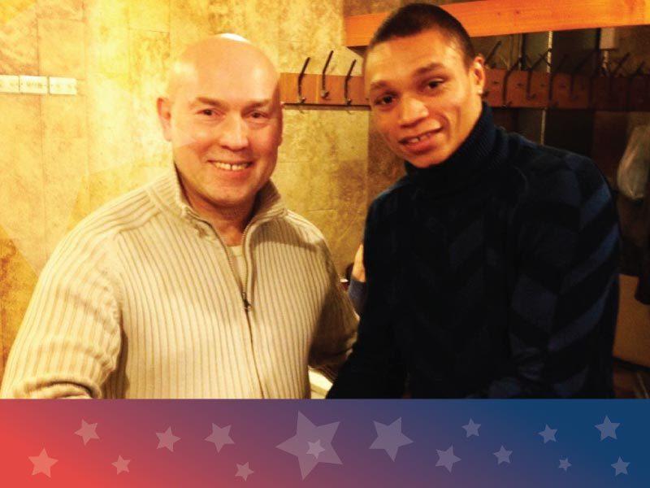

- Главная /
- Celebrities о США /
- Танцор Роман Романов: «США – это закон и порядок»
Танцор Роман Романов: «США – это закон и порядок»
Российский танцор Роман Романов рассказал о первом посещении Штатов, почему считает Нью-Йорк эталоном соблюдения порядка и о том, как мы, русские, воспринимаем американцев через призму кино.
В Соединённых Штатах я побывал в 2018 году в рамках гастролей певицы Жасмин в Нью-Йорке — в составе её шоу-балета. Мы жили в самом центре Манхэттена, и это позволило мне ощутить ритм Америки, её пульс.
Впечатления были сродни какому-то сну. Начать хотя бы с двенадцатичасового перелёта через Атлантический океан. Это, по сути, преодоление нескольких часовых поясов — уже как перенос в «зазеркалье», в иной мир, практически «на другую планету». Но, к слову, я довольно быстро акклиматизировался, быстро подстроился под ритм другой страны, незнакомого огромного города. Может быть, причиной этому было то, что мы прилетели туда работать, а не отдыхать.
В Соединённых Штатах я побывал в 2018 году в рамках гастролей певицы Жасмин в Нью-Йорке — в составе её шоу-балета. Мы жили в самом центре Манхэттена, и это позволило мне ощутить ритм Америки, её пульс.
Впечатления были сродни какому-то сну. Начать хотя бы с двенадцатичасового перелёта через Атлантический океан. Это, по сути, преодоление нескольких часовых поясов — уже как перенос в «зазеркалье», в иной мир, практически «на другую планету». Но, к слову, я довольно быстро акклиматизировался, быстро подстроился под ритм другой страны, незнакомого огромного города. Может быть, причиной этому было то, что мы прилетели туда работать, а не отдыхать.

В Нью-Йорке мы пробыли недолго, однако он сумел меня поразить. В первую очередь – сплошными небоскребами. Именно эта монументальность города в целом и располагает к тому, чтобы обращать внимание на мельчайшие детали. Например, на людей на улицах, их поведение, вывески и колорит заведений и магазинов. Они так уникально привлекают к себе внимание туристов и покупателей, что всё это и складывается в настоящий до безумия яркий калейдоскоп под названием Нью-Йорк.
В США – закон и порядок
Улицы Нью-Йорка, интересные лица нью-йоркцев – я всё время подсознательно сравнивал их с тем, что видим мы, русские, в американских фильмах. С тем, как мы воспринимаем американцев через призму кино. Во многом все так и оказалось.
Один раз я стал очевидцем случая, довольно серьёзно характеризующего Соединённые Штаты как страну закона и порядка. Организаторы везли нас на площадку, где мы должны были выступать, и из окна автомобиля уловил любопытную картину. Прохожий шёл с замаскированной бутылкой алкоголя в руке, и аккуратно выпивал. Он тщательно маскировался и пытался это скрыть от окружающих. Но его «счастье» длилось не долго: он мгновенно был окружён нарядом полиции и ему пришлось объясняться.
Зачастую в той же Москве мы можем видеть нарушение запрета на распитие спиртных напитков в общественных местах, — в парках, у метро, просто на улицах и во дворах. А вот та картина в Нью-Йорке, чётко показала мне, что там, в Америке, такие «игры» не проходят. Сразу вспомнились кадры из фильма «Брат-2», где герой (в роли – Виктор Сухоруков) свободно ведёт себя на улицах Нью-Йорка. Так вот, такое поведение там — это фантазии режиссёра.
Один раз я стал очевидцем случая, довольно серьёзно характеризующего Соединённые Штаты как страну закона и порядка. Организаторы везли нас на площадку, где мы должны были выступать, и из окна автомобиля уловил любопытную картину. Прохожий шёл с замаскированной бутылкой алкоголя в руке, и аккуратно выпивал. Он тщательно маскировался и пытался это скрыть от окружающих. Но его «счастье» длилось не долго: он мгновенно был окружён нарядом полиции и ему пришлось объясняться.
Зачастую в той же Москве мы можем видеть нарушение запрета на распитие спиртных напитков в общественных местах, — в парках, у метро, просто на улицах и во дворах. А вот та картина в Нью-Йорке, чётко показала мне, что там, в Америке, такие «игры» не проходят. Сразу вспомнились кадры из фильма «Брат-2», где герой (в роли – Виктор Сухоруков) свободно ведёт себя на улицах Нью-Йорка. Так вот, такое поведение там — это фантазии режиссёра.

Кстати, довольно знаковым в этом смысле для меня стала встреча с этим актером – Виктором Сухоруковым – в американском посольстве в Москве. Мы тогда с командой оформляли там визы в США. Мы были с ним знакомы до этого — по работе в Театре Моссовета, где я в своё время трудился в составе балетной труппы. Но та встреча в посольстве и его ассоциация с тем актером из «Брата» стали для меня знаком. Соблюдение горожанами законов и порядка, охрана этих законов и порядка полицейскими города – все чётко сошлось.
Роман Романов: «Американская мечта – достижима для всех»
Американская мечта для каждого американца, я уверен, в совершенно разных вещах. Ведь Америка, как и любая другая страна, — это лоскутное одеяло из разных социальных слоёв. И вот для малоимущих американская мечта заключается в том, чтобы обеспечить себе жизнь за счет государства. А для кого-то она – американская мечта — это деньги и власть, как в фильме «Волк с Уолл-стрит». И для тех, и для других эта мечта достижима – вот это, наверное, главное.
Если говорить о жизни в США, то я бы пожил там какое-то время, чтобы поучиться у американских хореографов чему-то новому. Ведь, американская школа танца – очень сильная и, безусловно, в ней могут научить тому, чему не могут в России и в Европе. Для этой цели я бы снова посетил Америку.
Если говорить о жизни в США, то я бы пожил там какое-то время, чтобы поучиться у американских хореографов чему-то новому. Ведь, американская школа танца – очень сильная и, безусловно, в ней могут научить тому, чему не могут в России и в Европе. Для этой цели я бы снова посетил Америку.